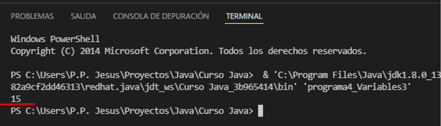

Manipular variables
Ahora que sabes cómo crear variables y darles un valor (inicializarlas), hay manipularlas para trabajar con ellas, ve el siguiente programa e intenta deducir que va a salir por la consola;

¿Ya lo descubriste?, si tu respuesta fue “se mostrará un 15”, estas en lo correcto (imagen 20), podemos sumar dos variables numéricas (int) y guardar el resultado de la operación en otra variable, y no solo sumar, también restar, dividir, multiplicar y comparar dos o más variables entre si, entre muchas otras operaciones que veremos en módulos más adelante.
